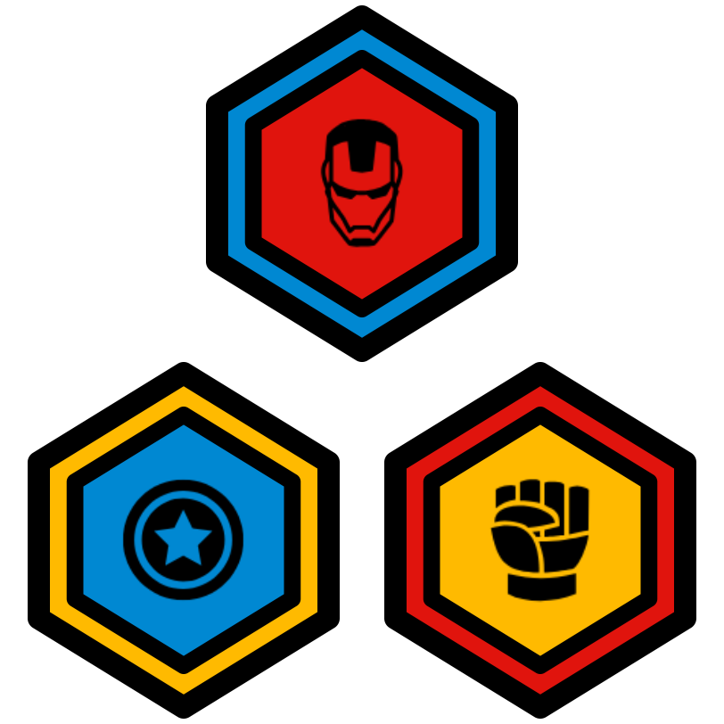

ThoughtSTEM Language Learning Handbook
1 Introduction
Welcome! This handbook contains learning "tactics" – i.e. algorithms, games, and activities designed to help people become extremely fluent in a variety of programming languages.
If you’re a coach, you should use these tactics to teach your students two things:
How to code
How to use the learning tactics on their own
This is a subtle but incredibly important point: You are not just teaching coding; you are teaching people how to learn coding. You’re not just playing games with students; you’re teaching them how to play the games without your help. You’re not just being a coach; you’re teaching them how to be coaches. You’re not just being a teacher; you’re teaching them how to be teachers. You’re not just being a leader; you’re teaching them how to lead.
What all this means is: as students become more and more skilled at doing these tactics, you should be giving them more and more responsibility for helping you run the tactics.
A brand new student might simply follow along as you lead a tactic. That’s fine. But...
A first-day student who has done a few tactics already should be capable of helping to explain those tactics to others.
A new student with a few days of class under their belt should be able to help out as an "assistant" coach in various ways.
Intermediate students should be able to run a few easy learning tactics from memory and a few advanced ones if they are referencing this book.
Advanced students should be able to run many tactics on their own and any tactic if they are referncing it in this book.
Students will only experience this growth in self-driven learning and leadership if you encourage them to begin taking on leadership roles as soon as possible.
Don’t: Just use this book to teach coding
Do: Teach them how to use this book
To make that very concrete: In this book, you will see many tactics that give an instruction to you, the coach. For example:
👤 Coach ⇒ hand write: the contents of the back of [Challenge-Card] on: the bottom half of [The-Whiteboard]
A novice coach might see this instruction and immediately begin writing on the whiteboard.
But let me ask you, who is "the coach"? Remember, it isn’t just you. Your students are coaches-in-training from day 1.
Ask them to write code on the board. Ask them to interpret the instructions for you. Ask them to step into your shoes and lead for a few seconds. A few minutes. A full tactic. Two tactics in a row. And so on.
The sooner they can lead their own tactics without help, the sooner you can help them at a much deeper level: i.e. helping them analyze their own strengths and weaknesses, selecting tactics that nurture those strengths and target those weaknesses.
This can take time. Have patience. But believe in your students. And believe in yourself.
2 The Language Learning Loop
The core thing you’ll be doing as a coach is running a "Language Learning Loop". It’s essential that coaches (and coaches-in-training) know what that is (and isn’t).
2.1 The "Basic"
The most basic thing that can be considered a "Language Learning Loop" is this, which we call the "Basic":
⮔ Do Until class is over |
👤 Coach ⇒ pick challenge-card |
👤 Coach ⇒ pick tactic |
👤 Coach AND 👤 Team ⇒ do tactic together |
👤 Team ⇒ take Kata test on challenge-card |
A Language Learning Loop is any teaching/learning algorithm that has these 5 essential qualities:
- It is a loop. The
Do Until class is over
is what makes it a "loop". It involves selecting a challenge card in some langauge being learned (e.g. battlearena, html5-lang, vr-lang, or any other ThoughtSTEM language)
It involves selecting a tactic – i.e. a learning algorithm – from this handbook. All tactics in this book are language-independent! That is: any tactic will work for any language.
It involves doing that tactic together with the team – helping them understand both the code on the challenge card, but also the tactic itself, so that they become better and better learners in the future.
It ends with students being officially tested – to see if they can write the code from the back of the challenge card while only seeing the front of the card. Whether they pass or fail, the conclusion of this test is the end of one cycle of the loop – at which point it can begin again with a new challenge card (or the same one).
There are as many Langauge Learning Loops as there are coaches, and we do encourage you to develop your own unique loop (i.e. unique teaching style) over time. However, when you do decide to innovate on the Language Learning Loop, it is essential that you avoid accidentally running something that does not fit the definition of a Language Learning Loop.
For example, this does not fit the definition:
⮔ Do Until class is over |
👤 Coach ⇒ pick challenge-card |
👤 Coach ⇒ pick tactic |
👤 Coach AND 👤 Team ⇒ do tactic together |
It is a loop. But this loop is missing one of the essential qualities! Indeed, it is missing the most essential quality of a Language Learning Loop: there is no test at the end!
Remember that students get badges like these for every ten tests that they pass:

These badges need to mean something. The tests are what help the badges maintain integrity. Tests are not easy to pass; and badges are not easy to earn. It’s supposed to be that way.
However, with the appropriate attitude, the learning (and earning) process can be fun – even though it is not easy. That’s precisely your job as a coach: to help students stay excited about challenging themselves, to help them embrace failure as a opportunity, to help them become proud of their hard work, to help them realize that they can do this even though it is hard.
There is nothing wrong with The Basic Loop. Many coaches, even extremely advanced ones, use this exact loop. Also, because it is so simple, it is a great one to teach to assistant coaches (i.e. your students).
2.2 The "Reduce Failures"
Some coaches do not like to see students fail. That’s understandable. This is a loop that greatly increases the chances that all of the students on your team will pass the test at the end of the loop. It does so by having another loop inside it, in which you really make sure that students are prepared for the test at the end.
⮔ Do Until time is up |
👤 Coach ⇒ pick challenge-card |
👤 Coach ⇒ pick tactic |
⮔ Do Until the tactic is completed satisfactoraly |
👤 Coach AND 👤 Team ⇒ do tactic together |
👤 Team ⇒ test on challenge-card |
This Language Learning Loop is good for novice students (who tend to be sensitive to failure). The drawback is that it takes longer to get to the test. But that’s also kind of the point – to delay getting there until students are ready.
2.3 The "100% Pass Rate"
Here’s one that makes absolutely certain that students pass the test at the end of the loop. It works by having an inner loop that has increasingly difficult tests embedded inside of it. This means that by the time you get to the test, you’ve already done the test many times already.
Here’s the "100% Pass Rate":
⮔ Do Until time is up |
👤 Coach ⇒ pick challenge-card |
👤 Coach ⇒ pick Disintegrating Code tactic |
👤 Coach AND 👤 Team ⇒ do Disintegrating Code together |
👤 Team ⇒ test on challenge-card |
This is exactly the same as the "Reduce Failures" – except that instead of picking any tactic in this book, you must pick the Disintegrating Code tactic. This tactic (printed below, and also later in this book) is somewhat special because it involves a loop where the coach writes code on the whiteboard and removes parts from it until there is nothing left, testing the team at each stage:
SETUP |
👤 Coach ⇒ hand write: |
the contents of the back of [the-challenge-card] |
on: |
the bottom half of [the-whiteboard] |
👤 Coach ⇒ hand write: |
the contents of the front of [the-challenge-card] |
on: |
the top half of [the-whiteboard] |
MAIN |
⮔ Do Until the contents of the bottom half of [the-whiteboard] is blank |
👤 Coach ⇒ remove some identifiers from: |
the contents of the bottom half of [the-whiteboard] |
👤 Team ⇒ erase all from: |
the contents of [Team-Computers] |
👤 Team ⇒ write a program that fits the requirements written on the top half of the whiteboard |
By the time the tactic is complete, the students have written the entire code without any prompting – which is precisely what the official test requires them to do. Thus, the test can be skipped (since they did it during the tactic). No need to test the team twice!
This Language Learning Loop is excellent for very sensitive novice students. It has a drawback, though: It only involves one tactic! There are many tactics in this book. Each tactic helps strengthen different coding skillsets. A well-rounded education does require doing a diverse variety of tactics over time.
This is a great loop to start with, though.
2.4 The "Choose Your Own Adventure"
This is a great loop for advanced students because it gives them more agency over their learning. Here the tactic is chosen by discusssion, and this continues until the team decides to move on to the test.
⮔ Do Until time is up |
👤 Coach ⇒ pick challenge-card |
⮔ Do Until team decides to move on |
👤 Coach ⇒ lead a discussion about "Which tactic should we do next?" |
👤 Team ⇒ vote on which tactic to do next |
👤 Coach AND 👤 Team ⇒ do tactic together |
👤 Team ⇒ test on challenge-card |
This works best with students who know a variety of tactics and who have developmed enough metacognitive ability to know which tactics will help them and their team learn most effectively.
It is also a perfect example of the fundamental principle of this handbook: Teach students to know how to learn. The more you involve them as active participants in their own learning process, the better.
The drawbacks are that you will need to know when to override the team’s decisions if their educational insights are flawed.
If they tend to keep picking the same tactics over and over, you will need to encourage them to explore new ones.
If they tend to be reluctant to test themselves, you may need to encourage them to stop doing tactics and take the test
If they tend to be too focused on taking tests and earning badges as fast as possible, you may need to slow them down and point out that the goal is to learn deeply, not quickly.
Even when students are directing their own learning, coaches must still provide valuable metacognitive guidance. Remember that traning your students to be coaches doesn’t mean you stop being one!
2.5 Conclusion
To conclude, there are many possible Language Learning Loops. You can even create your own. And you are allowed to switch between different loops at will (even in the middle of a class).
As long as a loop contains the essential qualities, it is valid, and you may do it.
In general, though, you should be training yourself and your students to become more and more active participants in the learning process.
After just one hour of coaching, you can self-assess with some of these questions:
Do your students know about this handbook? If not, why were you hiding it from them? The first step to helping them to become better coaches is to reveal the resources that you use.
Have your students seen you use this handbook to run a Language Learning Loop and at least one tactic? It’s fine if you have the contents of this book memorized – but you still need to teach out of the book. Why? Because it implicitly teaches students how to teach. If they see you using the handbook, they will be less shy about using it themselves when you hand it over to them and ask them to lead an activity. Use the book – and let your team see you using it. It is a mark of an experienced coach if you can both teach and also reveal your teaching process at the same time.
Do your students know what a Language Learning Loop is? Do they know what a tactic is? If not, why not? Weren’t you doing a Language Learning Loop with them? (You should have been! That’s your job as a coach.) If you were, then why weren’t you calling it the "Language Learning Loop"? All coaches need to know the names for the things that coaches do. Therefore, your students (who are all coaches-in-training) should know these words: "tactic", "challenge card", "Language Learning Loop", etc. They should know these terms because you’ve been using them the whole time!
Would your students be able to lead a tactic on their own? If not, that’s okay. This can take time for some students. But ask yourself, what can you do next time to challenge them to take on even more of a leadership role?
3 Tactics
3.1 Disintegrating Code
SETUP |
👤 Coach ⇒ hand write: |
the contents of the back of [the-challenge-card] |
on: |
the bottom half of [the-whiteboard] |
👤 Coach ⇒ hand write: |
the contents of the front of [the-challenge-card] |
on: |
the top half of [the-whiteboard] |
MAIN |
⮔ Do Until the contents of the bottom half of [the-whiteboard] is blank |
👤 Coach ⇒ remove some identifiers from: |
the contents of the bottom half of [the-whiteboard] |
👤 Team ⇒ erase all from: |
the contents of [Team-Computers] |
👤 Team ⇒ write a program that fits the requirements written on the top half of the whiteboard |
3.2 Code Anatomy
👤 Coach ⇒ hand write: |
the contents of the back of [the-challenge-card] |
on: |
the bottom half of [the-whiteboard] |
👤 Coach ⇒ label the lang line |
👤 Coach ⇒ label all definitions |
👤 Coach ⇒ label all non-definition code |
👤 Coach ⇒ circle all key-words |
👤 Coach ⇒ write the total number of key words |
👤 Coach ⇒ put a dot at the beginning of all parenthesized expressions |
👤 Coach ⇒ write up the total number of expressions |
👤 Coach ⇒ above each expression dot, write the expression's depth level |
3.3 ???
TODO
3.4 ???
TODO
3.5 ???
TODO
3.6 ???
TODO
3.7 ???
TODO
4 Advanced Tactics
These are tactics that are simply longer. If students have done many smaller tactics, they are ready for these. If they cannot do smaller tactics quickly and efficiently, though, they are probably not ready.
There’s no harm in trying. But if it takes too long to get your team to understand how to do these tactics, then they simply need more practice. Do some easier ones and come back to these on a different day.
4.1 Mafia
SETUP |
👤 Coach ⇒ tell the following as a story (be creative) "You're a game development company. The big release is a few days away! The code keeps breaking in the night..." |
GO SUB: (select-secret-subgroup coach team (quote Hackers)) |
👤 Coach ⇒ hand write: |
the contents of the back of [the-challenge-card] |
on: |
[the-whiteboard] |
👤 Coach ⇒ announce the contents of the front of [the-challenge-card] |
HACK-AND-DEFEND |
⮔ Do Until either: |
[Jail] contains all of the people in [Hackers] |
or: |
[Hackers] have exactly 2 points |
NIGHT |
👤 Hackers ⇒ introduce subtle bugs: |
the contents of the contents of [the-whiteboard] |
DAY |
GO SUB: (collaboratively-debug coach team timer whiteboard) |
END-OF-DAY |
👤 Coach ⇒ ⇶ If the contents of the front of [the-whiteboard] has no bugs |
add 0 to: |
current points for [Hackers] |
add 1 to: |
current points for [Hackers] |
GO SUB: (vote-member-into-new-group coach (not-in (quote Jail)) (quote Jail)) |
META-COGNITION |
👤 Coach ⇒ ⇶ If [Jail] contains all of the people in [Hackers] |
lead a discussion about "What are some strategies for when you get picked as a hacker?" |
lead a discussion about "What are some strategies for debugging code?" |
4.2 Team Memorize
STRATEGY |
👤 Coach ⇒ announce "In a moment, you must decide which order you will take turns in. You may also strategize during this phase. Do this wisely. After this phase, you will not be allowed to talk freely." |
👤 Coach ⇒ lead a discussion about the front of [the-challenge-card] |
👤 Team ⇒ arrange yourselves in a circle (the person to the right of [Coach] shall be [The-Starting-Player]) |
SILENT |
👤 Coach ⇒ announce "The [Silent] phase has begun. Any talking during this phase will result in penalties and possibly an instant-loss. Hand signals are permitted. Looking at the challenge card when you are not the owner is forbidden." |
👤 Coach ⇒ give [the-challenge-card] to [The-Starting-Player] |
⮔ Do Until everyone in the circle has had at least 1 turn(s) |
GO SUB: (pass-and-memorize challenge-card) |
ONE-TALKER |
👤 Coach ⇒ announce "The [One-Talker] phase has begun. During this phase, you may only speak or gesture if you own the timer. If you own the whiteboard, you may write or gesture (but you may not speak). All other forms of communication from anyone will result in penalties or an instant loss for the whole team." |
👤 Coach ⇒ hide [the-challenge-card] |
👤 Coach ⇒ give [the-whiteboard] to [The-Starting-Player] |
👤 Coach ⇒ give [the-timer] to the person to the right of [The-Starting-Player] |
⮔ Do Until everyone in the circle has had at least 1 turn(s) |
GO SUB: (timer-holder-talks-to-scribe timer whiteboard) |
TESTING |
👤 Coach ⇒ announce "The [Testing] phase has begun. All communication is forbidden in this phase. However, you may type on your own computer and look at the whiteboard whenever you want. By the end of this phase, the goal is to have the same code on all of the computers. And it must work correctly! Nod your heads if you understand." |
👤 Team ⇒ nod |
👤 Coach ⇒ announce "You have 5 minutes beginning now." |
👤 Coach ⇒ set 5 minutes on [the-timer] |
⮔ Do Until [the-timer] is beeping |
👤 Team ⇒ write code as you wish, but minding the rules of the current phase |
META-COGNITION |
👤 Coach ⇒ announce "The [Scoring] phase has now begun. If the code on EACH computer is correct, we all win." |
GO SUB: (all-correct-post-mortem coach students computers) |
4.3 ???
TODO
4.4 ???
TODO
4.5 ???
TODO